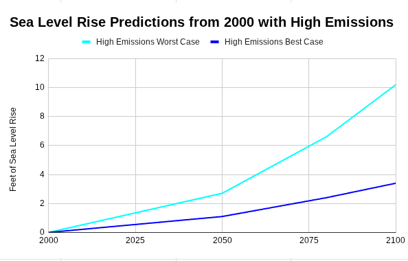

What You Can Do
What's Causing Sea Level Rise?
Sea level rise is the process of water levels rising due to global warming. With the atmosphere warming up, water is expanding and ice is melting, increasing the overall volume of the ocean. This is happening because emissions from burning fossil fuels and landfills are adding greenhouse gases to the atmosphere. The Sun’s energy warms the planet, but some is reflected back into space. Greenhouse gases fill the atmosphere and absorb most of the heat, reheating the Earth instead of letting it eventually go back to space. In addition to the water expanding, ice and glaciers are melting. This not only adds water to the ocean, but also destroys many animals’ habitats. Some effects of sea level rise are coastal erosion and the loss of land, both of which are destroying more habitats and endangering animals including people.
Future Sea Level Rise Predictions
By 2100 the sea level has a 66% likelihood of rising 3 feet/ 1 meter.

How to Combat Sea Level Rise
Switch to Renewable Energy
Turning away from fossil fuels is arguably the most important part of combating sea level rise and global warming. There are multiple things we can do to mitigate the effects and even counteract it, but if we don’t stop contributing to it, it will never cease. Using renewable energy like wind, solar, and water is thousands of times better for the environment. Even nuclear energy is more beneficial though it isn’t renewable.
Rehabilitate Forests
Helping to increase and protect Earth’s forests will also help fight sea level rise. Forests absorb almost 16 million metric tons of carbon dioxide per year which slows the warming of the atmosphere and thereby the oceans.
Hard Shoreline Maintenance
Hard shoreline maintenance means using man-made things like sea walls to control sea level rise.
Sea Walls and Flood Barriers
Sea walls can be built along coasts to stop erosion and flooding and protect against storm surges. Unfortunately, these aren’t optimal for long term prevention as sea level rise in the future could render them useless.
Soft Shoreline Maintenance
Soft shoreline maintenance means using natural things like dunes to help fight sea level rise. It’s generally more eco-friendly, sustainable in the long run, and cost efficient.
Create Living Shorelines/Wetlands
Wetlands are a natural protection against sea level rise. They control the flow of floodwaters inland and protect against erosion. This solution is not only adaptable to changing environments, but it’s also economically sustainable. We can grow more and protect living shorelines and get coastal wetland to expand inland so they’ll protect more land. Another part of this is rehabilitating and protecting mangrove groves. This is impactful because mangroves help stabilize the flood which prevents erosion and they help mitigate the effect of storm surges and waves.
Protect Native Species
Protecting wildlife helps combat global warming because animals remove billions of tons of carbon dioxide. Native species also help protect their habitats and keep the balance of the environment. This is beneficial on a global level because coastal, marine, and forest habitats do combat climate change.
Oyster Reefs
As oysters grow, they become rock-like and home for many marine lifeforms. Oysters also eat by filtering algae out of the water so they create places with amazing water quality. Some research says that a single oyster can filter 50 gallons of water per day. In addition, they can also combat erosion. Oyster reefs can firm up the seafloor which, in turn, protects against waves. Because of this, they can also protect coastal wetlands.
Coastal Dunes
Coastal dunes help protect against storm surges and waves. This helps mitigate erosion and possibly best of all, it helps with carbon sequestration. This means that the dunes trap carbon dioxide, and so slows climate change.
What You Can Do
Even small things can help. Doing a simple beach clean up can make a big impact. It can help protect the local marine ecosystem which, in turn, will help fight global warming. If that pollution were to remain there, the ecosystem would have been taken over by erosion and sea level rise.
You can also help support organizations and companies that are working on this problem. Simple donations and volunteer work can go a long way. Some options are The Nature Conservancy (TNC), Surfrider Foundation, and Save the Bay.
If you’re not ready to commit to anything bigger, just teaching other people about this problem can spread awareness and gain help in this field.
The biggest impact of all though,is helping to implement one of the methods to combat sea level rise whether it's in your own neighborhood or in an organization spreed across the world.